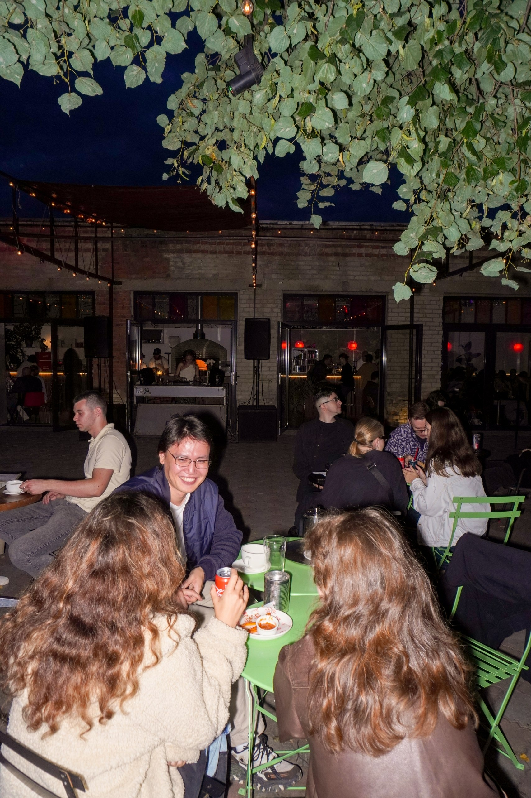
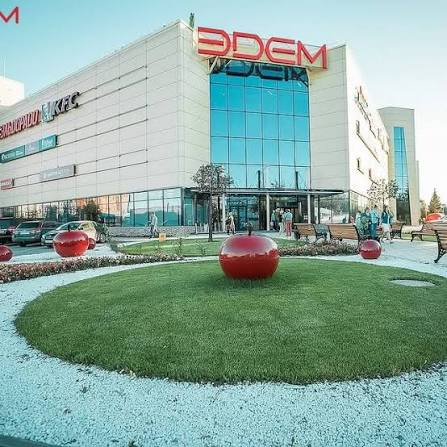
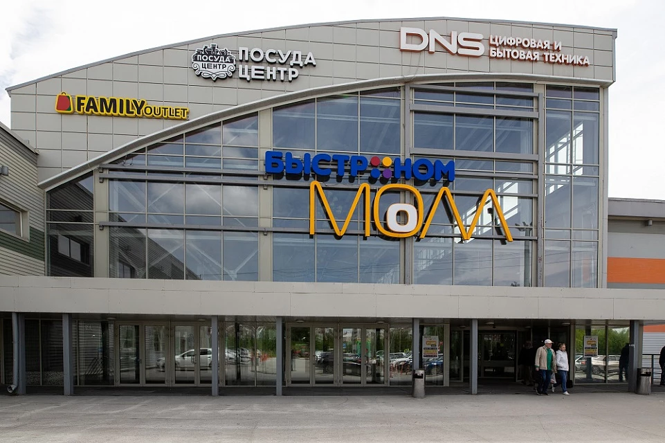
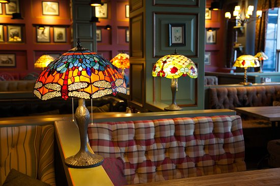

Один из старейших жилых массивов Академгородка со своей легендой о названии — сегодня один из самых живых районов с крупными молами, барами и ресторанами.
Порядок, в котором вы пойдёте по этим точкам, зависит от вашего маршрута — его называют организаторы. Здесь точки перечислены просто для справки.

Бар с открытой террасой, дровяной печью для пиццы и вечерними диджей-сетами — популярное место встреч студентов Академгородка тёплыми вечерами.

Торгово-развлекательный комплекс «Эдем» на улице Кутателадзе, 4 — один из крупнейших молов Академгородка: четыре этажа, около 38 000 кв. м торговых площадей и бесплатная парковка почти на 700 машин. Работает ежедневно с 10:00 до 22:00.

Торговый центр на улице Инженерной, 5/1, построенный вокруг супермаркета «Быстроном» — здесь же работают магазины электроники DNS, «Посуда Центр» и Family Outlet. Комплекс открыт ежедневно с 07:00 до полуночи.
Пункт, где ведётся работа с гражданами призывного возраста района «Щ» — часть системы военных комиссариатов Советского района Новосибирска.

Ресторан-пивоварня «Гуси» — заведение с собственным пивоварением прямо в зале: посетители могут наблюдать, как готовится пиво. В меню — американская, европейская и немецкая кухня, а фирменную линейку из шести сортов пива время от времени обновляют.
Бар-магазин крафтового пива на улице Гнесиных, 10/1, в бизнес-центре «Гнесинка». Большой выбор крафтового пива на розлив и в холодильниках, домашние закуски, настольные игры и Wi-Fi — можно приходить и с собакой.
Реальные координаты и порядок точек для вашего личного маршрута присылает бот — эта страница только для знакомства с местами заранее.